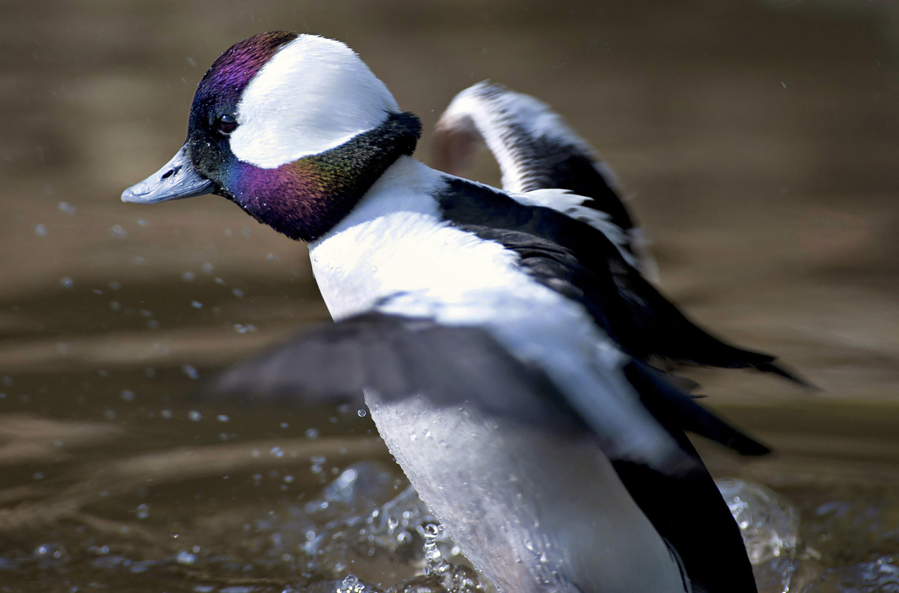

Am I Thinking About You? (.com)
Yes
updated every second
Here're some poems
As shameful as it is to admit, these poems are taken from my masculinity poems. They are contained within the section, "I Know the Earth, and I Am Sad," a section which is prefaced by some starkly beautiful prose accepting that nature itself is full of sorrow, witnessing grief, and that when man has failed to experience true emotion through joy or pleasure, he must turn inwards to a grief that connects him to the latent depression of beasts. It's a silly book, filled with such distinctions: the sorrow of nature, the innerness of sorrow. As opposed to what? Is industry where joy is, is joy only external? It's explicit in one thing, which I appreciate: these are songs and stories to make sense of a world undistinguished. Phliosophy, poetry, Marxist theory, Olivia Rodrigo albums, self-help books: they offer ontologies that illuminate our world. Sorry, I don't mean to go on. I think sometimes the authors of self-help books are just trying to help their self. I miss you, take the earth and its sorrow, mix it with joy.
Sonnets to Orpheus IV by Rainer Maria Rilke O you lovers that are so gentle, step occasionally into the breath of the sufferers not meant for you, let it be parted by your cheeks, it will tremble, joined again, behind you. You have been choosen, you are sound and whole, you are like the very first beat of the heart, you are the bow that shoots the arrows, and also their target in tears your smile would glow forever. Do not be afraid to suffer, give the heaviness back to the weight of the earth; mountains are heavy, seas are heavy. Even those trees you planted as children became too heavy long ago - you couldn't carry them now. But you can carry the winds...and the open spaces... Melancholy Inside Families by Pablo Neruda I keep a blue bottle. Inside it an ear and a portrait. When the night dominates the feathers of the owl, when the hoarse cherry tree rips out its lips and makes menacing gestures with rinds which the ocean wind often perforates — then I know that there are immense expanses hidden from us, quartz in slugs, ooze, blue waters for a battle, much silence, many ore-veins of withdrawals and camphor, fallen things, medallions, kindnesses, parachutes, kisses. It is only the passage from one day to another, a single bottle moving over the seas, and a dining room where roses arrive, a dining room deserted as a fish bone; I am speaking of a smashed cup, a curtain, at the end of a deserted room through which a river passes dragging along the stones. It is a house set on the foundations of the rain, a house of two rooms with the required number of windows, and climbing vines faithful in every particular. I walk through afternoons, I arrive full of mud and death, dragging along the earth and its roots, and its indistinct stomach in which corpses are sleeping with wheat, metals, and pushed-over elephants. But above all there is a terrifying, a terrifying deserted dining room, with its broken olive cruets, and vinegar running under its chairs, one ray of moonlight tied down, something dark, and I look for a companion inside myself: perhaps it is a grocery store surrounded by the sea and torn clothing from which sea water is dripping. It is only a deserted dining room, and around it there are expanses, sunken factories, pieces of timber which I alone know, because I am sad, and because I travel, and I know the earth, and I am sad.
Here's a picture
I played a board game about attracting birds to your sanctuary. I did poorly, as I prioritized birds I liked over valuable birds, namely ducks.
